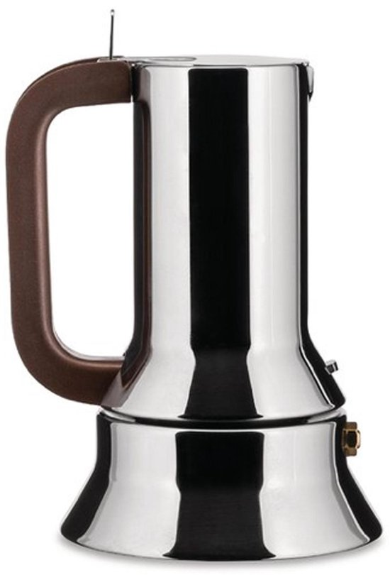
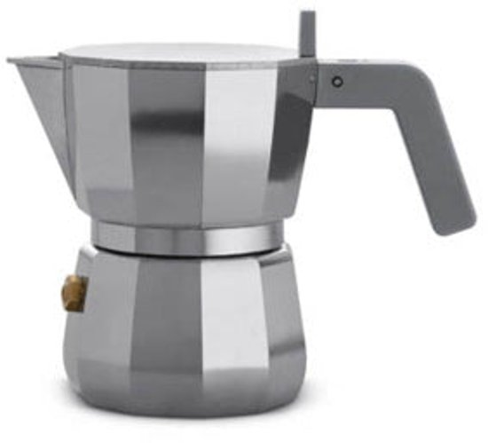

Bialetti reviews: van klassieke moka tot moderne varianten
Bialetti is het bekendste merk voor mokapots, met modellen die variëren van eenvoudige aluminium klassiekers tot elektrische en inductie‑vriendelijke uitvoeringen. De reviews laten zien hoe elk model scoort op koffiesmaak, praktische bruikbaarheid en geschiktheid voor verschillende fornuizen, zodat je snel kunt inschatten welke Bialetti het beste past bij jouw manier van koffiezetten.

Bialetti Fiammetta
Perfecte balans tussen prijs, kwaliteit en smaak. Ideaal voor beginners.

Bialetti Venus
Beste keuze voor inductie. RVS constructie werkt op alle kookplaten.

Bialetti Moka Express
Het origineel. Iconische klassieker die generaties meegaat.

Bialetti Brikka
Unieke klep creëert espresso-achtige crema. Voor liefhebbers.
Bialetti Moka Timer
Eerste elektrische Bialetti. Timer tot 24u, automatische uitschakeling.

Bialetti Alpina
Compact en elegant. Perfect voor kleine keukens.

Bialetti Musa
Modern design, RVS, inductie-compatible. Elegant alternatief voor Venus.

Bialetti Dama
Stijlvolle variant op de klassieker. Voor wie iets anders wil.

Bialetti Mini Express
Kleinste Bialetti. Direct serveren in 2 kopjes. Perfect voor koppels.
Alessi reviews: Italiaanse percolators met designkarakter
Alessi‑percolators combineren Italiaans design met dagelijkse koffiepraktijk. De vier geteste modellen – waaronder ontwerpen van bekende vormgevers – worden beoordeeld op smaak, comfort in gebruik en onderhoud. Zo wordt duidelijk of het uitgesproken design ook functioneel sterk is, of vooral een visueel statement op het aanrecht.

Alessi 9090
Richard Sapper's meesterwerk. Compasso d'Oro 1979. Eerste inductie espresso maker.

Alessi La Conica
Architectonisch meesterwerk. Vorm > functie. Voor design puristen.

Alessi Moka
Modern redesign. 11-zijdig body. Toegankelijk Alessi design voor €70-125.

Alessi Pulcina
Gepatenteerde V-tuit stopt overbittere smaak. Design Michele De Lucchi.
Elektrische percolators: gemak zonder fornuis
Elektrische percolators bieden geconcentreerde koffie uit een eigen basis, zonder afhankelijk te zijn van gas of inductie. De vijf modellen in deze categorie verschillen in capaciteit, extra functies zoals timers en automatische uitschakeling, en in de constistentie van de koffie. De reviews maken zichtbaar welk apparaat in de praktijk het meeste gemak en de beste koffie levert.
De'Longhi Alicia EMK
Best verkochte elektrische percolator. Transparante top, betrouwbaar.
Rommelsbacher EKO 366
Duitse precisie. RVS 18/10. Beste elektrische koffiesmaak (9.0/10).
Cloer 5928
Duitse betrouwbaarheid voor budget prijs. Simpel maar effectief.
Cilio Classico Electric
Italiaans design meets elektrisch. Klassiek mooi, middle ground prijs.
Andere merken: niche percolators met eigen karakter
Naast de grote namen zijn er kleinere merken met eigen ideeën over materiaal, vorm en koffiestijl. De twee geteste percolators in deze categorie worden beoordeeld op smaakprofiel, kwaliteit van de afwerking en dagelijks gebruik. Dit helpt bij het kiezen van een alternatief voor de klassiekers, met een percolator die net even anders aanvoelt en eruitziet.
Giannini Giannina
Handgemaakt Italiaans vakmanschap. Gepatenteerd rotatie-systeem, 10 jaar garantie.
Stelton Collar
Deens minimalisme. Houten greep, compact, perfect voor kleine keukens.

Grosche Milano
Sterk alternatief voor Bialetti. RVS, inductie, goede prijs/kwaliteit.